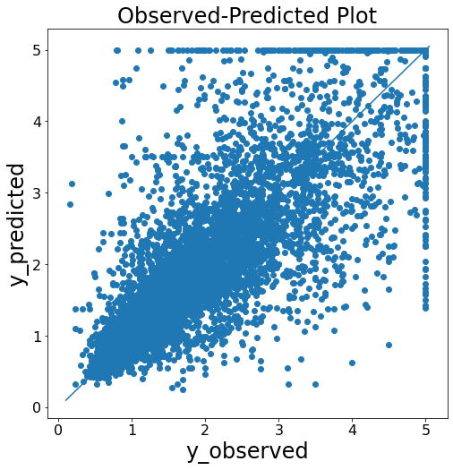

General Data Analysis¶
サンプルデータの取得¶
必要モジュールのインストール¶
# import module
import pandas as pd
import numpy as np
import matplotlib.pyplot as plt
import seaborn as sns
import japanize_matplotlib
from matplotlib_venn import venn2
import missingno as msno
import math
from scipy import stats
import warnings
サンプルデータの取得 (california housing price)¶
サンプルデータとしてscikit learnのcalifornia housingのデータフレームを読み込む。
#Calfornia hosing dataの読み込み
# サンプルデータの取得
data = sklearn.datasets.fetch_california_housing()
df_1=pd.DataFrame(data.data, columns=data.feature_names)
df_1["Price"]=data.target
#データ分割
X_train_1, X_test_1, y_train_1, y_test_1 = train_test_split(df_1.iloc[:,:-1], df_1.Price, test_size=0.3, random_state=42)
#モデル作成
tree_reg = DecisionTreeRegressor(random_state=0)
tree_reg.fit(X_train_1,y_train_1)
#予測
y_obs_1=y_test_1
y_pred_1=tree_reg.predict(X_test
サンプルデータの取得 (taitanic)¶
サンプルデータとしてtaitanicのデータフレームを読み込む。
#Taitanicデータ読み込み
#サンプルデータ作成
titanic = fetch_openml(data_id=40945, as_frame=True)
df_2=titanic.data
#データ分割
train_2,test_2=train_test_split(df_2, test_size=0.5)
可視化モジュール¶
欠損値の可視化¶
欠損値をmsnoモジュールを使用して可視化する。ざっくりデータフレーム全体の欠損値、欠損値のパターンを理解する際に使用。
def missing_plot(df: pd.DataFrame,type="matrix"):
"""show missing plot by misno
Args:
df (pd.DataFrame): target_df
type: matrix/bar/heatmap/dendrogram
"""
if type=="matrix":
msno.matrix(df)
if type=="bar":
msno.bar(df)
if type=="heatmap":
msno.heatmap(df)
if type=="dendrogram":
msno.dendrogram(df)
missing_plot(df_2,type="matrix")
missing_plot(df_2,type="bar")
missing_plot(df_2,type="heatmap")
missing_plot(df_2,type="dendrogram")
Matrix
Bar
Heatmap
Dendrogram
欠損値の可視化¶
データフレームで欠損値があるカラム名とその欠損値割合を表示する。
def get_null_df(df: pd.DataFrame):
"""Calculate missing data rate
Args:
df (pd.DataFrame): target_df
Returns:
col_null_df: dataframe of null_feature_rate
"""
col_null_df = pd.DataFrame(columns = ['Column', 'Type', 'Total NaN', '%'])
col_null = df.columns[df.isna().any()].to_list()
L = len(df)
for col in col_null:
T = 0
if df[col].dtype == "float64":
T = "Numerical"
elif df[col].dtype == "int64":
T = "Numerical"
else:
T = "Categorical"
nulls = len(df[df[col].isna() == True][col])
col_null_df = col_null_df.append({'Column': col,
'Type': T,
'Total NaN': nulls,
'%': (nulls / L)*100
}, ignore_index=True)
return col_null_df
ユニーク値の可視化¶
ユニークな値とその個数をデータフレーム形式で取得する。データ全体のカテゴリ変数の全体像を把握したい際に利用する。
def get_unique_df(df: pd.DataFrame):
"""Show unique column data
Args:
df (pd.dataFrame):target_df
Returns:
unique_df: unique_df_columns
"""
unique_df = pd.DataFrame(columns=['Feature', 'Unique', 'Count'])
for col in df.columns:
v = df[col].unique()
l = len(v)
unique_df = unique_df.append({'Feature':col,
'Unique':v,
'Count':l}, ignore_index=True)
return unique_df
ベン図の作成¶
train, testのデータセットがある場合それぞれの項目に対する各データセットの分布をベン図で可視化する。 どちらか一方のデータセットだけにしかない項目を見つけるのに最適な手法。
def get_venn_plot(train: pd.DataFrame, test: pd.DataFrame):
"""show venn plot from train/test_dataset
Args:
train (pd.DataFrame): target_train_df
test (pd.DataFrame): target_test_df
"""
columns = test.columns
columns_num = len(columns)
n_cols = 4
n_rows = columns_num // n_cols + 1
fig, axes = plt.subplots(figsize=(n_cols*3, n_rows*3),
ncols=n_cols, nrows=n_rows)
for col, ax in zip(columns, axes.ravel()):
venn2(
subsets=(set(train[col].unique()), set(test[col].unique())),
set_labels=('Train', 'Test'),
ax=ax
)
ax.set_title(col)
fig.tight_layout()
相関図ヒートマップの作成¶
seabornのヒートマップを利用してNumericデータ間の相関を可視化する。 説明変数間の関係を把握したい際に利用する。
def get_corr_heatmap(train: pd.DataFrame, test: pd.DataFrame):
"""show correlation heat map
Args:
train (pd.DataFrame): target_train_df
test (pd.DataFrame): target_test_df
"""
fig, axs = plt.subplots(nrows=2, figsize=(15, 15))
plt.subplots_adjust(wspace=0.4, hspace=0.6)
sns.heatmap(train.corr(
), ax=axs[0], annot=True, square=True, cmap='coolwarm', annot_kws={'size': 14}, fmt="1.2f")
sns.heatmap(test.corr(), ax=axs[1], annot=True,
square=True, cmap='coolwarm', annot_kws={'size': 14}, fmt="1.2f")
for i in range(2):
axs[i].tick_params(axis='x', labelsize=14)
axs[i].tick_params(axis='y', labelsize=14)
axs[0].set_title('Training Set Correldef get_check_norm(x:pd.Series):
"""show norm feature with Sapiro-Wilk test
Args:
x (pd.Series): Pandas Series
"""
plt.hist(x, bins=100)#ヒストグラム表示
plt.pause(.01)
stats.probplot(x, dist="norm", plot=plt)#QQプロット表示
plt.pause(.01)
p=stats.shapiro(x)#シャピロウィルク検定
print(p)
ations', size=15)
axs[1].set_title('Test Set Correlations', size=15)
plt.show()
正規分布の確認¶
正規分布にどの程度従っているか確認する際に利用する。 シャピロウィルク検定にて正規分布にどの程度従うのか定量化する事ができる。
def get_check_norm(x:pd.Series):
"""show norm feature with Sapiro-Wilk test
Args:
x (pd.Series): Pandas Series
"""
plt.hist(x, bins=100)#ヒストグラム表示
plt.pause(.01)
stats.probplot(x, dist="norm", plot=plt)#QQプロット表示
plt.pause(.01)
p=stats.shapiro(x)#シャピロウィルク検定
print(p)
yyplot 作成関数¶
予実判定として予測結果と実測値の比較をする際に利用する。
def get_yyplot(y_obs:list, y_pred:list):
"""show yyplot
Args:
y_obs (list): actual y
y_pred (list]): predicted y
"""
yvalues = np.concatenate([y_obs, y_pred])
ymin, ymax, yrange = np.amin(yvalues), np.amax(yvalues), np.ptp(yvalues)
fig = plt.figure(figsize=(8, 8))
plt.scatter(y_obs, y_pred)
plt.plot([ymin - yrange * 0.01, ymax + yrange * 0.01], [ymin - yrange * 0.01, ymax + yrange * 0.01])
plt.xlabel('y_observed', fontsize=24)
plt.ylabel('y_predicted', fontsize=24)
plt.title('Observed-Predicted Plot', fontsize=24)
plt.tick_params(labelsize=16)

数値データの分布可視化¶
train/testのデータセットでNumericデータの分布を確認する際に使用する。 train/testのデータセットで大きく分布が異なる場合は訓練時のデータ選択に留意する。
def get_numeric_features_plot( train: pd.DataFrame, test: pd.DataFrame, cont_features: list, height, figsize,hspace=.3):
"""Show Numeric Features Distribution
Args:
train (pd.DataFrame): train_df
test (pd.DataFrame): test_df
cont_features (list): target_features
height ([float]): plot_height
figsize ([float]): plot_size
hspace (float, optional): space of figs. Defaults to .3.
"""
ncols = 2
nrows = int(math.ceil(len(cont_features)/2))
fig, axs = plt.subplots(
ncols=ncols, nrows=nrows, figsize=(height*2, height*nrows))
plt.subplots_adjust(right=1.5, hspace=hspace)
for i, feature in enumerate(cont_features):
plt.subplot(nrows, ncols, i+1)
# Distribution of target features
sns.distplot(train[feature], label='Train',
hist=True, color='#e74c3c')
sns.distplot(test[feature], label='Test',
hist=True, color='#2ecc71')
plt.xlabel('{}'.format(feature), size=figsize, labelpad=15)
plt.ylabel('Density', size=figsize, labelpad=15)
plt.tick_params(axis='x', labelsize=figsize)
plt.tick_params(axis='y', labelsize=figsize)
plt.legend(loc='upper right', prop={'size': figsize})
plt.legend(loc='upper right', prop={'size': figsize})
plt.title('Distribution of {} Feature'.format(
feature), size=figsize, y=1.05)
plt.show()
get_numeric_features_plot(train=X_train_1,test=X_test_1,
cont_features=X_train_1.columns,
height=5,figsize=12,hspace=.4)
カテゴリーデータのカウント可視化¶
train/testのデータセットでcategoryデータの分布を確認する際に使用する。
def categorical_count_plot( train: pd.DataFrame, test: pd.DataFrame, cat_features: list, height, figsize, hspace=.3):
"""Show Numeric Features Distribution
Args:
train (pd.DataFrame): train_df
test (pd.DataFrame): test_df
cat_features (list): target_features
height ([float]): plot_height
figsize ([float]): plot_size
hspace (float, optional): space of figs. Defaults to .3.
"""
ncols = 2
nrows = int(math.ceil(len(cat_features)/2))
train["type"] = "train"
test["type"] = "test"
whole_df = pd.concat([train, test], axis=0).reset_index(drop=True)
fig, axs = plt.subplots(
ncols=ncols, nrows=nrows, figsize=(height*2, height*nrows))
plt.subplots_adjust(right=1.5, hspace=hspace)
for i, feature in enumerate(cat_features):
plt.subplot(nrows, ncols, i+1)
# Distribution of target features
ax=sns.countplot(data=whole_df, x=feature, hue="type")
ax.set_xticklabels(ax.get_xticklabels(),rotation = 90)
plt.xlabel('{}'.format(feature), size=figsize, labelpad=15)
plt.ylabel('Density', size=figsize, labelpad=15)
plt.tick_params(axis='x', labelsize=figsize)
plt.tick_params(axis='y', labelsize=figsize)
plt.legend(loc='upper right', prop={'size': figsize})
plt.legend(loc='upper right', prop={'size': figsize})
plt.title('Count of {} Feature'.format(feature), size=figsize, y=1.05)
plt.show()
#category itemの指定
cat_items=['sex','boat']
categorical_count_plot(train=train_2,test=test_2,
cat_features=cat_items,
height=5,figsize=12,hspace=.4)
円グラフの作成¶
categoryデータの構成割合を円グラフで可視化する際に利用する。
def get_pie_plot(df:pd.DataFrame, target_feature:str, column:str, title:str):
"""show target_feature rate
Args:
df (pd.DataFrame): target df
target_feature ([str]): target feature to show rate
column ([str]): column to count target_feature
title ([str]): fig titles
"""
plt.style.use('default')
sns.set_style('whitegrid')
sns.set(font="IPAexGothic")
sns.set_palette('Set2')
target_df=df.groupby(target_feature)[column].count().reset_index()
labels =[]
target=target_df.copy()
for i in range(len(target)):
label = target[target_feature][i] + " [" + str(round(target[column][i]*100 / target[column].sum(),1)) + " %" + "]"
labels.append(label)
x = labels
x= target[target_feature]
y = target[column]
fig = plt.figure(figsize=(50,5))
ax = fig.add_subplot(1, 2, 1)
ax.pie(y, counterclock=False,startangle=90,rotatelabels=False, labels=x);
plt.title(title)
plt.legend(labels,loc="lower left");
カテゴリーのデータのBoxPlot作成¶
カテゴリー変数に対するtarget(Numeric)値の範囲をboxplotで可視化する際に利用する。
def get_cat_boxplot(df,x,y,title,order:list,height,hue=None):
"""Show box plot
Args:
df ([type]): target_df
x ([type]): target_x
y ([type]): target_y
title ([type]): fig title
order (list): BoxPlot_order
hue ([type], optional): show hue. Defaults to None.
"""
fig = plt.figure(figsize=(height*1.5,height))
plt.style.use('default')
sns.set_style('whitegrid')
sns.set(font="IPAexGothic")
sns.set_palette('Set2')
sns.set_style( {"xtick.major.size":4,"ytick.major.size":4})
ax=plt.gca()
if hue is None:
g = sns.boxplot(data = df,
x=x, y =y,
sym = "",
order=order
)
else:
g = sns.boxplot(data = df,
x=x, y =y,
sym = "",
order=order,
hue=hue
)
g.set_title(title)
labels = ax.get_xticklabels()
plt.setp(labels, rotation=90);
get_cat_boxplot(df=df_2,x="sex",y="age",
title="age boxplot of each sex",
order=["male","female"],
height=8)
前処理モジュール¶
標準化¶
Numericデータを標準化する際に使用する。
def StandardScaler(input_df: pd.DataFrame, target_cols: list):
"""Standard Scaling
Args:
input_df (pd.DataFrame): input dataframe
target_cols (list): target columns
Returns:
output_df (pd.DataFrame): output dataframe
"""
features = input_df[target_cols]
scaler = preprocessing.StandardScaler().fit(features.values)
features = scaler.transform(features.values)
input_df[target_cols] = features
output_df=input_df.copy()
return output_df
正規化 (Min/Max)¶
Numericデータを正規化する際に使用する。
def MinMaxScaler(input_df: pd.DataFrame, target_cols: list):
"""MinMax Scaling
Args:
input_df (pd.DataFrame): input dataframe
target_cols (list): target columns
Returns:
output_df (pd.DataFrame): output dataframe
"""
features = input_df[target_cols]
scaler = preprocessing.MinMaxScaler().fit(features.values)
features = scaler.transform(features.values)
input_df[target_cols] = features
output_df=input_df.copy()
return output_df
#target columns
target_cols=["MedInc","HouseAge","AveRooms"]
df_minmax=df_1[target_cols].copy()
MinMaxScaler(input_df=df_minmax, target_cols=target_cols)
正規化 (L1/L2 Norm)¶
Numericデータを(L1/L2 Norm)で正規化する際に使用する。
def Normalizer(input_df: pd.DataFrame, target_cols: list, norm="l2"):
"""_summary_
Args:
input_df (pd.DataFrame): input dataframe
target_cols (list): target columns
norm (list, optional): select ["l2", "l2", "max"]. Default is "l2"
Returns:
output_df (pd.DataFrame): output dataframe
"""
features = input_df[target_cols]
scaler = preprocessing.Normalizer(norm=norm).fit(features.values)
features = scaler.transform(features.values)
input_df[target_cols] = features
output_df=input_df.copy()
return output_df
#target columns
target_cols=["MedInc","HouseAge","AveRooms"]
df_nor=df_1[target_cols].copy()
Normalizer(input_df=df_nor, target_cols=target_cols, norm="l1")
標準化 (Robust Scaler)¶
NumericデータをRobust Scalerで標準化する際に使用する。 外れ値の影響が大きい際に利用する。
def RobustScaler(input_df: pd.DataFrame, target_cols: list):
"""Robust Scaler
Args:
input_df (pd.DataFrame): input Dataframe
target_cols (list): target columns
Returns:
output_df (pd.DataFrame): output dataframe
"""
features = input_df[target_cols]
scaler = preprocessing.RobustScaler().fit(features.values)
features = scaler.transform(features.values)
input_df[target_cols] = features
output_df=input_df.copy()
return output_df
#target columns
target_cols=["MedInc","HouseAge","AveRooms"]
df_rob=df_1[target_cols].copy()
RobustScaler(input_df=df_rob, target_cols=target_cols)
カスタム関数の実装¶
指定カラムに独自の関数をあてがい、新たに説明変数を作成する際に利用する。
def FunctionTransformer(input_df: pd.DataFrame, target_cols: list, function):
"""Apply function to dataframe
Args:
input_df (pd.DataFrame): input dataframe
target_cols (list): target columns
function : function
Returns:
output_df (pd.DataFrame): output dataframe
"""
features = input_df[target_cols]
scaler = preprocessing.FunctionTransformer(
function).fit(features.values)
features = scaler.transform(features.values)
input_df[target_cols] = features
output_df=input_df.copy()
return output_df
#target columns
target_cols=["MedInc","HouseAge","AveRooms"]
df_func=df_1[target_cols].copy()
#define function
def apply_func(x):
x=x*2
return x
FunctionTransformer(input_df=df_func, target_cols=target_cols, function=apply_func)
カウントエンコーディング¶
カウントエンコーディングにて指定説明変数の数を数え、新たな説明変数を追加する。
def CountEncoding(target_cols, input_df: pd.DataFrame):
"""CountEncoding
Args:
target_cols (category): target columns
input_df (pd.DataFrame): input dataframe
Returns:
output_df (pd.DataFrame): output dataframe
"""
features = input_df[target_cols]
encoder = ce.CountEncoder().fit(features.values)
output_df = pd.DataFrame(encoder.transform(features.values))
output_df.columns = target_cols
output_df = output_df.add_prefix("CE_")
output_df = pd.concat([input_df, output_df], axis=1)
return output_df
target_cols=["sex"]
output_df=CountEncoding(target_cols=target_cols,input_df=df_2)
output_df[["sex","CE_sex","target"]]
ラベルエンコーディング¶
ラベルエンコーディングにてcategory変数を変換する。
def LabelEncoding(target_cols, input_df: pd.DataFrame):
"""Labelencoding
Args:
target_cols (category): target columns
input_df (pd.DataFrame): input dataframe
Returns:
output_df (pd.DataFrame): output dataframe
"""
features = input_df[target_cols]
encoder = ce.OrdinalEncoder().fit(features.values)
output_df = pd.DataFrame(encoder.transform(features.values))
output_df.columns = target_cols
output_df = output_df.add_prefix("LE_")
output_df = pd.concat([input_df, output_df], axis=1)
return output_df
target_cols=["sex"]
output_df=LabelEncoding(target_cols=target_cols,input_df=df_2)
output_df[["sex","LE_sex","target"]]
OneHotエンコーディング¶
OneHotエンコーディングにてcategory変数を変換する。
def OneHotEncoding(target_cols, input_df: pd.DataFrame):
"""OneHotEncoding
Args:
target_cols (category): target columns
input_df (pd.DataFrame): input dataframe
Returns:
output_df (pd.DataFrame): output dataframe
"""
features = input_df[target_cols]
encoder = ce.OneHotEncoder(use_cat_names=True).fit(features.values)
output_df = pd.DataFrame(encoder.transform(features.values))
output_df.columns = output_df.columns.str[2:]
output_df = output_df.add_prefix("OHE_")
output_df = pd.concat([input_df, output_df], axis=1)
return output_df
target_cols=["sex"]
output_df=OneHotEncoding(target_cols=target_cols,input_df=df_2)
output_df[["sex","OHE_female","OHE_male","target"]]
ターゲットエンコーディング¶
ターゲットエンコーディングにて目的変数に対してのcategory変数の平均を取得する。
def TargetEncoding(target_cols, input_df: pd.DataFrame, target):
"""TargetEncoding
Args:
target_cols (category): target columns
input_df (pd.DataFrame): input dataframe
target (str): column name
Returns:
output_df (pd.DataFrame): output dataframe
"""
features = input_df[target_cols]
encoder = ce.TargetEncoder().fit(features.values, target)
output_df = pd.DataFrame(encoder.transform(features.values))
output_df.columns = target_cols
output_df = output_df.add_prefix("TE_")
output_df = pd.concat([input_df, output_df], axis=1)
return output_df
target_cols=["sex"]
output_df=TargetEncoding(target_cols=target_cols,input_df=df_2,target=df_2["age"])
output_df[["sex","TE_sex","age"]]
四則演算処理¶
指定columnの四則演算にて新規に説明変数を追加する。
def ArithmeticOperation(input_df, target_column1: str, target_column2: str, operation: str):
"""Arithmetic operation
Args:
input_df (pd.DataFrame): input dataframe
target_column1 (str): target columns 1
target_column2 (str): target columns 2
operation (str): select ["+","-","*","/"]
Returns:
output_df (pd.DataFrame): output dataframe
"""
output_df = input_df.copy()
output_df_columns_name = f'{target_column1}{operation}{target_column2}'
if operation == "+":
output_df[output_df_columns_name] = output_df[target_column1] + \
output_df[target_column2]
elif operation == "-":
output_df[output_df_columns_name] = output_df[target_column1] - \
output_df[target_column2]
elif operation == "*":
output_df[output_df_columns_name] = output_df[target_column1] * \
output_df[target_column2]
elif operation == "/":
output_df[output_df_columns_name] = output_df[target_column1] / \
output_df[target_column2]
output_df = pd.concat(
[input_df, output_df[output_df_columns_name]], axis=1)
return output_df
target_cols=["AveRooms","AveBedrms"]
output_df=ArithmeticOperation(input_df=df_1,target_column1="AveRooms",target_column2="AveBedrms",operation="+")
output_df[["AveRooms","AveBedrms","AveRooms+AveBedrms"]]
カラム結合¶
category変数に対して指定のNumeric変数の平均、最大値、最小値、合計を算出。新規に説明変数として追加する。
def AggregateOperation(input_df: pd.DataFrame,key: str,
agg_column: str,agg_funcs:list,fillna=None):
"""Aggregate Operation
Args:
input_df (pd.DataFrame): input DataFrame
key (str): category column
agg_column (str): _numeric column
agg_funcs (list): select ["sum","mean","max","min"]
fillna (optional): Defaults to None.
Returns:
output_df (pd.DataFrame): output dataframe
"""
if fillna:
input_df[agg_column] = input_df[agg_column].fillna(fillna)
group_df = input_df.groupby(key).agg({agg_column: agg_funcs}).reset_index()
column_names = [f'GP_{agg_column}@{key}_{agg_func}' for agg_func in agg_funcs]
group_df.columns = [key] + column_names
output_df = pd.merge(input_df[key], group_df, on=key, how="left").drop(columns=[key])
output_df = pd.concat([input_df, output_df], axis=1)
return output_df
output_df=AggregateOperation(input_df=df_2,
key="sex",agg_column="age",
agg_funcs=["sum","mean","max","min"])
output_df[["sex","age","GP_age@sex_sum","GP_age@sex_mean","GP_age@sex_max","GP_age@sex_min"]]
グラフィカルラッソによる偏相関可視化¶
グラフィカルラッソにて各説明変数間の相関関係を可視化する。
from sklearn.covariance import GraphicalLasso
from sklearn.covariance import GraphicalLassoCV
import pydot
from IPython.display import Image, display
# 可視化ライブラリ
import matplotlib.pyplot as plt
import matplotlib as mpl
import seaborn as sns
from statsmodels.graphics.factorplots import interaction_plot
def execute_graphical_lassoCV(X, alphas=4, verbose=True):
X_std = (X - X.mean(axis=0)) / X.std(axis=0)
glasso = GraphicalLassoCV(alphas=alphas, verbose=verbose)
glasso.fit(X_std)
print("alpha = ", glasso.alpha_)
return glasso
def execute_graphical_lasso(X, alpha=0.2, verbose=True):
X_std = (X - X.mean(axis=0)) / X.std(axis=0)
glasso = GraphicalLasso(alpha=alpha, verbose=verbose)
glasso.fit(X_std)
return glasso
def Disp_Gaussian_Graphical_Model(model, feature_names):
"""
GraphLassoによる変数間の関係のグラフ化@知識のサラダボウル
バグ修正して使用
"""
pre_ = model.precision_ #スパース化した分散共分散行列の逆行列
#グラフ表示のために対角成分は0にする
pre_zero = pre_ - np.diag(np.diag(pre_))
#分散共分散行列の逆行列(≒隣接行列)からグラフを生成する
g = pydot.Dot(graph_type='graph')
df = pd.DataFrame(index=feature_names.tolist(),
columns=feature_names.tolist(),
data=pre_zero.tolist())
#ノードを追加
for c in df.columns:
node = pydot.Node(c)
g.add_node(node)
#エッジを追加
for i in df.index:
for c in df.columns:
if c>=i:
#print(i, c)
#エッジの絶対値が0.1より大きいときに表示(ここは好みによる)
if abs(df.loc[i, c]) > 0.1:
if df.loc[i, c] > 0.0:
style = "solid"
else:
style = "dashed"
edge = pydot.Edge(g.get_node(i)[0], g.get_node(c)[0],
penwidth=5*abs(df.loc[i, c]), style=style)
edge.set_label('{:.1f}'.format(df.loc[i, c]))
g.add_edge(edge)
#結合数によって色を変える
nodeList = g.get_node_list()
num_edges = np.sum(abs(pre_zero) > 0.1,axis=0)
max_num_edges = max(np.amax(num_edges),1)
for i, tag in enumerate(df.index):
node = g.get_node(tag)[0]
# H S Vの順 Sを変更
color=str(0.3)+" "+str(num_edges[i] / max_num_edges)+" "+str(1)
node.set_color("black") #nodeの輪郭の色
node.set_fillcolor(color) #nodeの中身の色
node.set_style('filled')
# グラフを出力
#g.write_png('LassoEstimatedGGM.png', prog='neato')
g.write_png('LassoEstimatedGGM.png')